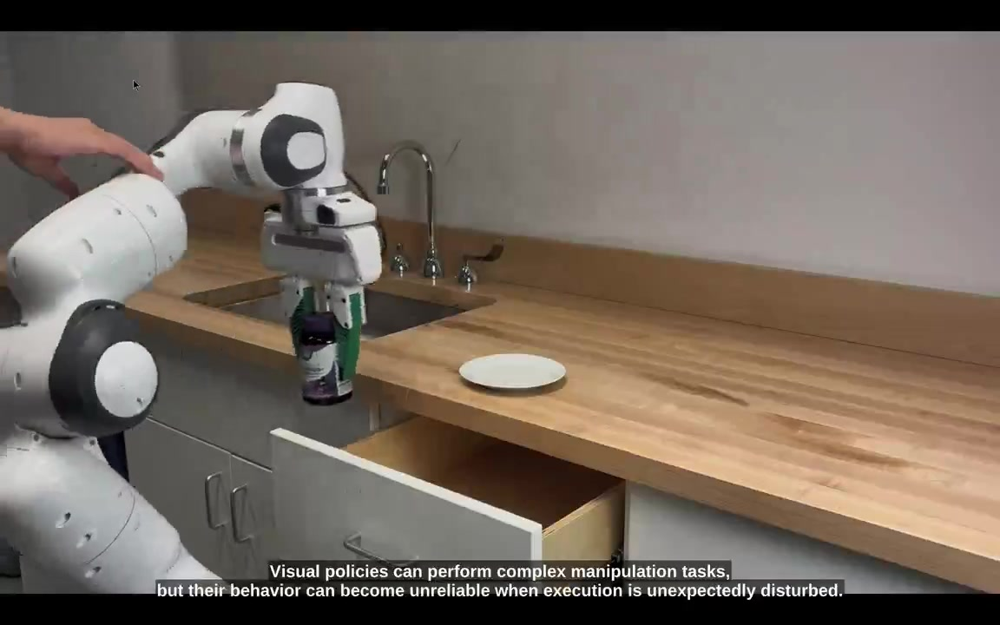
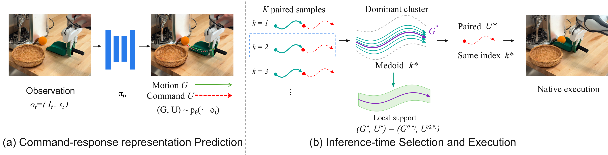

Dynamic System Policy:
Robust Visuomotor Policies via Gaussian Dynamic Fields

Predict Commands and Motion Together
Each prediction pairs controller commands with the motion expected to result. DSP selects a representative motion from the largest cluster and executes its paired commands; the cluster's spread defines a local support region.

What Is a Dynamical System?
A dynamical system describes how a state changes over time. Ours specifies how the robot should move from its current position to recover toward a fixed reference.
Prediction
Query 1 / K = 16Phase 00 / 48
End effectorSelected motionLocal supportLocked reference
Synthetic 2D example using our recovery-field logic, not live policy inference or robot physics.
Real-World Experiments
Representative successful trials and failure cases across four tasks.
Separate trials at presentation speed, not method comparisons or real-time task durations. Quantitative results are in the paper.